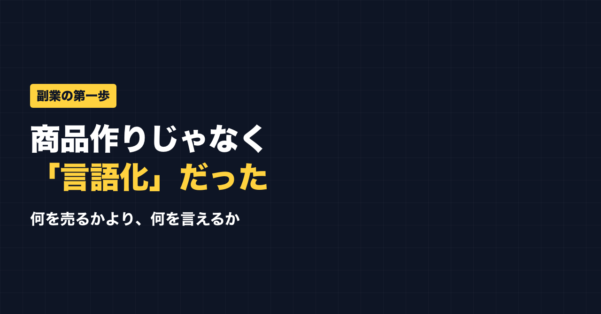

1. タイトルをコピーして、note のタイトル欄に貼る
2. 「本文1をコピー」から順にコピーし、note の本文に貼る
3. 青いラベルの位置に、images フォルダの同じ名前の画像を入れる（本文には貼られません）
※ 見出しが普通の文字になった場合は、その行を選んで「大見出し」を設定してください

「副業ドラフト」という、自分の強みを整理して投稿の下書きまで作れるツールを作りました。
売上は、今のところゼロです。利用者もゼロ。
しかも先日、自分で客として試してみたら、APIキーの有効期限が切れていて、約7週間ずっと最初のボタンでエラーになっていました。誰も使えない状態だったのに、私は気づいていなかった。使われていないから、壊れていても分からなかったんです。
キーは入れ替えて、もう復旧しています。ただ、このことで「順番が逆だったな」と思いました。今日はその話です。
商品を先に作ると、こうなりやすい
「稼ぐには商品が必要だ」と思うと、まず商品を作りたくなります。でも、土台がないまま作ると、こうなりやすい。
- 誰に届けるのかが曖昧（＝刺さらない）
- 自分の強みと商品がズレている（＝語れない）
- そもそも自分を知ってもらえていない（＝見てもらえない）
私の場合、少なくとも3つ目は当てはまっていました。基礎工事なしで家を建てようとしていたようなものです。
先にやるべきは「言語化」
今の私が考える第一歩は、自分の言語化です。
- 自分の強みは何か
- 誰の役に立てるのか
- どんな経験を語れるのか
これを言葉にするのが先。ここが固まると、「誰に・何を届けるか」が決まり、発信の軸ができて、その延長線上に商品が見えてきます。
順番
私が今、意識している順番はこうです。
1. 言語化：自分の強み・届けたい相手を言葉にする
2. 発信：その強みで役立つ情報を届け、知ってもらう
3. 商品：信頼してくれた人に、必要なものを届ける
商品は最後。発信の中で「こういうものが欲しい」という声を拾ってから作れば、的外れなものを作るリスクは下げられます。
「言語化」でつまずく人が多い
ただ、この最初の言語化がいちばん難しい。自分のことは、自分がいちばん見えないからです。人に質問してもらう、AIに質問させるなど、外から引き出してもらうほうが早いと感じています。
公式LINEでは、発信や副業に使えるプロンプトを配っています。「特典」と送ると、LINE限定のプロンプト5本が届きます。
https://lin.ee/RzyA13P
自分の強みを整理して、SNSの投稿の下書きまで作れるツール「副業ドラフト」も作っています。Threads の下書き3本までは無料で試せます。
https://note-threadssf.onrender.com